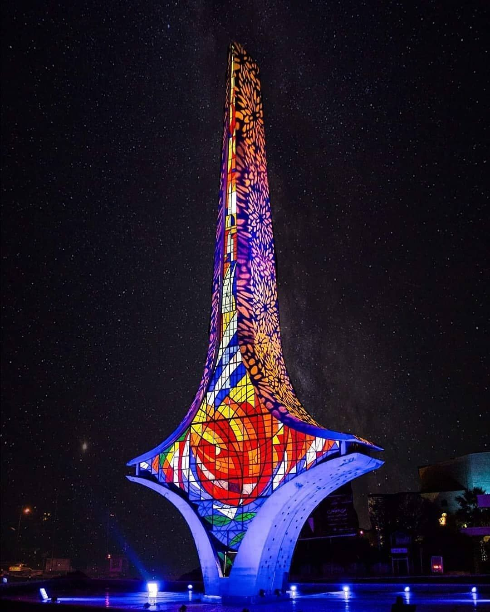

Emevi Meydanı'nın ortasındaki yüksek Şam kılıcı anıtı, tarihi bir tanık ve Suriyelilerin hafızasında kök salmış görsel bir kimlik olarak Şam Uluslararası Fuarı ile ilişkilendirildi, güç ve yüceliği simgeledi ve geçmişin ihtişamını günümüzün başarıları ile ilişkilendirdi.
Anıt, tarihçi İmad Al-Armshi'ye göre, Şam Uluslararası Fuarı'nın yedinci oturumuna denk gelen pazar alanının ve şelalelerin genişletilmesi sırasında inşa edildi.
Satış pazarı ve eski Şam Uluslararası Fuarı'nın kapısı ve şeffaf İçine, katılımcılara göre her yıl değiştirilen katılımcı ülkelerin bayraklarını taşıyan plastik plakalar yerleştirildi.
Şam Kılıcı, on yıllar boyunca Şam Uluslararası Fuarı için birçok yayın, poster ve posta pulu yerleştirdi.
Şam'ın en önemli simge yapılarından biri haline geldi.
